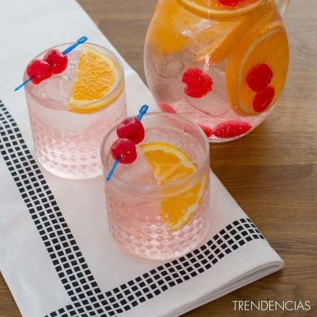
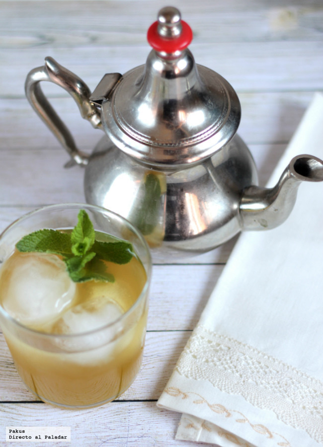

Recetas sin alcohol
Cóctel Shirley Temple

Ingredientes: Para 1.5 unidades:
- Refresco de lima-limón 1 l
- Cerezas en conserva 150 g
- Naranja 1
- Granadina al gusto
Té verde helado al estilo moruno

Ingredientes:
- Té verde
- Azúcar moreno
- Unas ramas de hierbabuena
Cóctel Shirley Temple
Té verde helado al estilo moruno